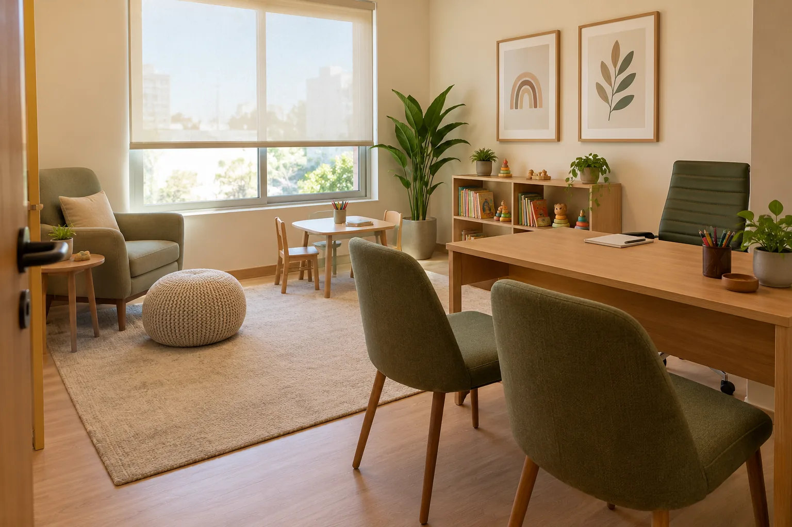

Avaliação neuropsicológica
Investiga diferentes aspectos do funcionamento da criança ou adolescente, considerando sua história e suas necessidades. As etapas são explicadas antes do início.
Perguntar sobre a avaliaçãoPsicóloga · CRP SP 06/176596
Em Porto Feliz, Maria Luíza Viana Santos atende famílias que buscam compreender dúvidas sobre desenvolvimento, aprendizagem e comportamento. Conheça seu trabalho e tire dúvidas sobre o atendimento.
Você pode começar com uma pergunta, sem compartilhar dados sensíveis da criança.
UM PRIMEIRO PASSO
Você pode contar brevemente sua dúvida para conhecer os atendimentos disponíveis e entender como funciona o primeiro passo. A necessidade de uma avaliação depende de uma análise profissional; não é preciso decidir isso antes de entrar em contato.
Tirar uma dúvida no WhatsAppÁREAS DE ATUAÇÃO
A avaliação neuropsicológica é o destaque. Conheça também as outras áreas de atuação.
Investiga diferentes aspectos do funcionamento da criança ou adolescente, considerando sua história e suas necessidades. As etapas são explicadas antes do início.
Perguntar sobre a avaliaçãoEscuta e acompanhamento psicológico de acordo com a faixa etária e as necessidades de cada pessoa.
Perguntar sobre atendimento psicológicoAcompanhamento com objetivos definidos conforme as necessidades identificadas em cada caso.
Perguntar sobre reabilitaçãoUm espaço para mães, pais e responsáveis conversarem sobre dúvidas relacionadas à criança ou ao adolescente.
Perguntar sobre orientaçãoSOBRE MIM
Sou Maria Luíza, psicóloga com atuação em neuropsicologia infantojuvenil.
Meu trabalho com crianças, adolescentes e famílias começa por conhecer a história e as dúvidas de quem me procura. Sou formada em Psicologia pela Universidade Paulista e em Neuropsicologia pela Universidade Prominas.
Reabilitação neuropsicológica, psicologia da criança e do adolescente, autismo e orientação parental.
Centro de Estudos Avançados de Psicologia · Universidade de Uberaba · Faculdade Integrada de Itararé · Centro de Avaliação, Atendimento e Educação em Saúde Mental
PRESENÇA NO GOOGLE
Muitas famílias chegam até mim por indicação ou por uma pesquisa no Google. Leia as avaliações públicas diretamente na plataforma e conheça melhor meu trabalho.
COMO COMEÇAR
O percurso varia conforme o atendimento. Veja o que você pode esperar ao iniciar a conversa.
Conte brevemente qual atendimento procura. Não é necessário compartilhar informações sensíveis da criança pelo WhatsApp.
Pergunte sobre disponibilidade, formato do atendimento, valores e como funciona o primeiro encontro.
As etapas de uma avaliação ou acompanhamento são explicadas de acordo com o serviço e as necessidades apresentadas.
LOCAL DE ATENDIMENTO
Veja o endereço no mapa e as informações de atendimento.

ATENDIMENTO PRESENCIAL
Avenida Monsenhor Seckler, 326Precisa de alguma orientação para chegar? Envie uma mensagem.
Perguntar sobre a localizaçãoDÚVIDAS FREQUENTES
Encontre respostas para as perguntas mais comuns. Se precisar, converse pelo WhatsApp sobre o que importa para sua família.
Tirar uma dúvida no WhatsAppEnvie uma mensagem breve sobre o que procura. Você pode perguntar sobre o serviço, a disponibilidade e como é feito o primeiro encontro, sem expor dados sensíveis da criança.
Não. Você pode entrar em contato para conhecer os atendimentos. A necessidade de uma avaliação não é definida apenas por uma mensagem.
A forma de participação depende do tipo de atendimento e da situação. Pergunte como isso acontece no serviço que você procura.
A duração pode variar conforme cada caso. As etapas e a previsão de tempo são apresentadas ao explicar o processo.
Informe qual atendimento procura pelo WhatsApp para consultar os valores atuais e saber se há atendimento por convênio.
PRIMEIRO CONTATO
Envie uma mensagem breve para conhecer as opções e perguntar sobre os próximos passos.
Tirar uma dúvida no WhatsApp